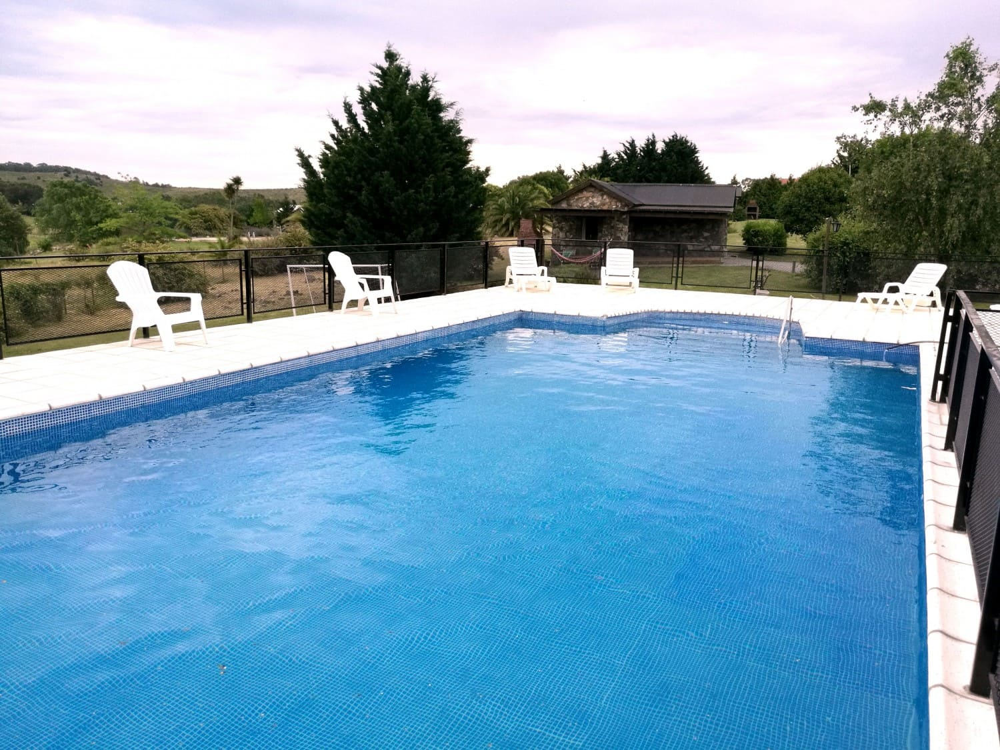

Incluidos dentro de tu estadia estan: Servicio de desayuno Reposicion diaria de blancos Recambio de sabanas y taollones de piscina c/3 noches (no incluye limpieza diaria) Servicio de Wifi Estacionamiento individual Dos televisores por cabaña:

Nuestra atraccion principal son las piletas, podes encontrar la pileta climatizada cubierta, la cual esta disponible los 365 dias del año. Pero ademas, en verano podes disfrutar de la pileta descubierta, desde la cual podes observar la vista a las sierras mientras te refrescas.
